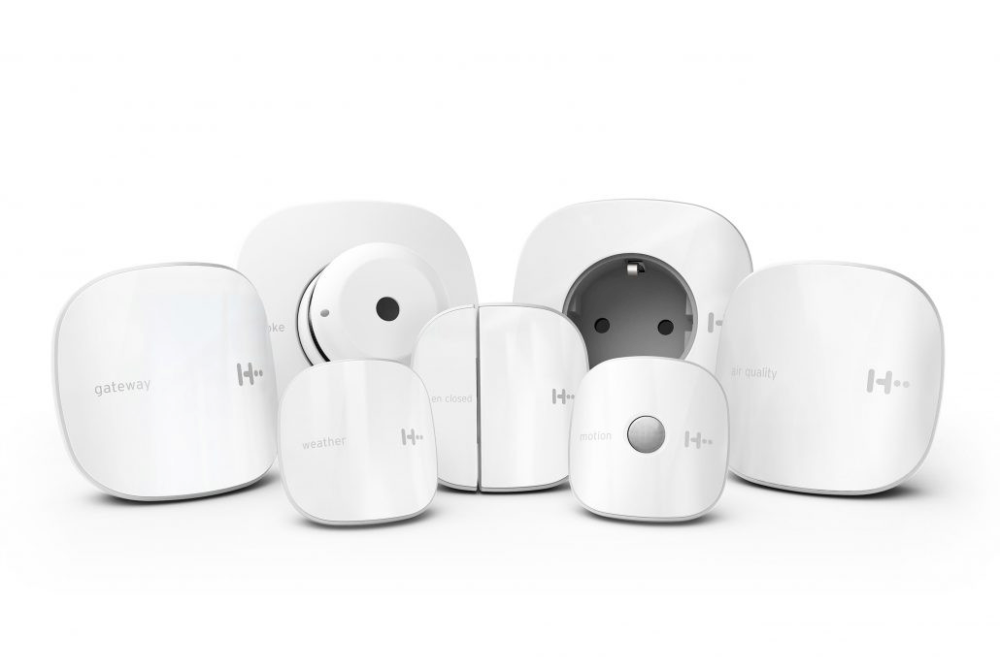
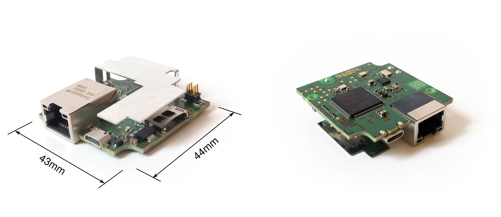
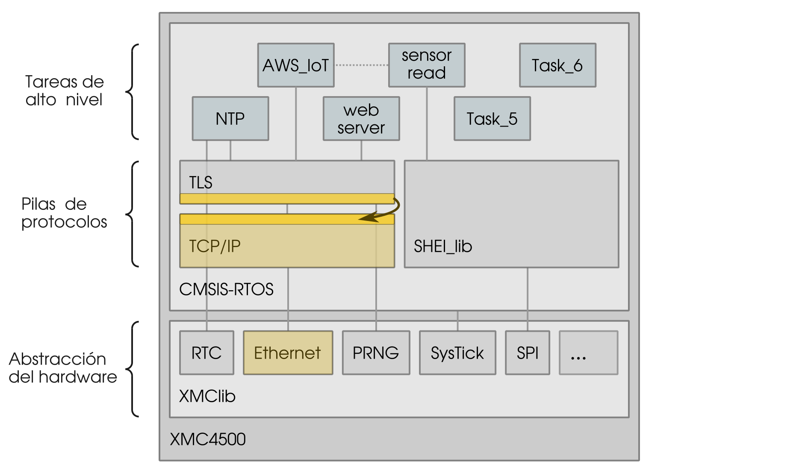
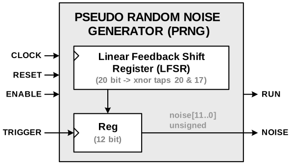
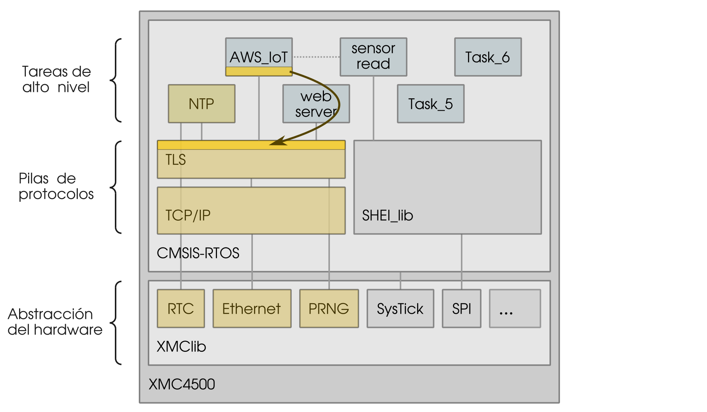

Seguridad de los Datos en Sistemas Empotrados
Cristian González Guerrero
Universidad de Granada
Máster en Ciencia de Datos e
Ingeniería de Computadores
Seguridad de los Datos en Sistemas Empotrados
A SME enabler for nationally and internationally funded projects. Offering engineering services for:
- Chip development
- Project management
- Telecommunications
- Circuit and system design
- IoT in general
H2 smart



Fin de las prácticas
Durante la estancia descubro:
- Internet de las Cosas (IoT)
- Sistemas empotrados
Máster DATCOM - proyectos con eesy-innovation
Seguridad de los Datos en Sistemas Empotrados
Objetivos

Objetivos

Objetivos

Objetivos
- Establecer comunicación segura con Internet
- Revisar implementaciones TLS
- Intercambio de mensajes con AWS IoT
Seguridad de los Datos en Sistemas Empotrados
H2 miniGW
H2 miniGW

H2 miniGW

H2 miniGW
H2 miniGW
XMC4500
- Procesador: ARM Cortex-M4 (32-bit CPU)
- Flash (programa + datos): 1024KB
- RAM: 160KB (en 3 bloques)
- Periféricos: DAC, ADC, Ethernet, USIC, etc.
Firmware

Seguridad de los Datos en Sistemas Empotrados
Criterios de la búsqueda
- Adecuada para sistemas empotrados
- Lenguaje C estándar
- Low footprint
- Compatible con el sistema
- CMSIS-RTOS
- lwIP
- Seguridad
- Ciphersuites AWS IoT
- Desarrollo continuo


| VS |
|
mbed TLS |
|---|---|---|
| Conocido por | MySQL | |
| Verificaciones | WolfCrypt (FIPS-140 l1) |
No |
| Licencia | $5000 | Sin costo |
| Compatible | RTOS, lwIP | AWS IoT SDK |
Seguridad de los Datos en Sistemas Empotrados
Objetivos
Integración de mbed TLS
Será necesario:
- Importar biblioteca al proyecto
- Compilar (firmware incluye biblioteca)
- Modificar lo necesario para que funcione
Tiene dependencias de la plataforma...
Integración de mbed TLS

Integración de mbed TLS
Integración de mbed TLS

Integración de mbed TLS

Módulo de red
net_sockets.c
#if defined(MBEDTLS_NET_C)
#if !defined(unix) && !defined(__unix__) && !defined(__unix) && \
!defined(__APPLE__) && !defined(_WIN32) && !defined(DAVE)
#error "This module only works on Unix, DAVE and Windows, see MBEDTLS_NET_C in config.h"
#endif
#if defined(MBEDTLS_PLATFORM_C)
#include "mbedtls/platform.h"
#else
#include <stdlib.h>
#endif
#include "mbedtls/net_sockets.h"
#include <string.h>
#if (defined(_WIN32) || defined(_WIN32_WCE)) && !defined(EFIX64) && \
!defined(EFI32)
/***********
* WINDOWS *
***********/
#ifdef _WIN32_WINNT
#undef _WIN32_WINNT
#endif
/* Enables getaddrinfo() & Co */
#define _WIN32_WINNT 0x0501
#include <ws2tcpip.h>
#include <winsock2.h>
#include <windows.h>
#if defined(_MSC_VER)
#if defined(_WIN32_WCE)
#pragma comment( lib, "ws2.lib" )
#else
#pragma comment( lib, "ws2_32.lib" )
#endif
#endif /* _MSC_VER */
#define read(fd,buf,len) recv(fd,(char*)buf,(int) len,0)
#define write(fd,buf,len) send(fd,(char*)buf,(int) len,0)
#define close(fd) closesocket(fd)
static int wsa_init_done = 0;
#else /* ( _WIN32 || _WIN32_WCE ) && !EFIX64 && !EFI32 */
#if defined(DAVE)
/********
* DAVE *
********/
#include <sys/types.h>
#include <lwip/sockets.h>
#include <lwip/inet.h>
#include <unistd.h>
#include <signal.h>
#include <lwip/netdb.h>
#include <errno.h>
#else
/********
* UNIX *
********/
#include <sys/types.h>
#include <sys/socket.h>
#include <netinet/in.h>
#include <arpa/inet.h>
#include <sys/time.h>
#include <unistd.h>
#include <signal.h>
#include <fcntl.h>
#include <netdb.h>
#include <errno.h>
#endif /* DAVE */
#endif /* ( _WIN32 || _WIN32_WCE ) && !EFIX64 && !EFI32 */
#endif /* MBEDTLS_NET_C */
Fuentes de entropía
Fuentes de entropía
Aleatoriedad dada por:
- No determinismo
- Digital → Analog → Digital
- Recolección de entropía
Módulo de temporización
#include "mbedtls/platform_DAVE.h"
mbedtls_time_t mbedtls_time_DAVE( mbedtls_time_t* timer ) {
mbedtls_time_t now;
if (timer == NULL) {
timer = &now;
}
RTC_Time(timer);
return *timer;
}
Configuración de mbed TLS
Configuración mínima con ciphersuites recomendados por AWS y reducción del uso de memoria

Verificaciones
- Tests unitarios: proporcionados por mbed TLS
- Test funcional: conectar con servidor HTTPS
Programa selftest.c
Verificar recepción de 200 OK
Seguridad de los Datos en Sistemas Empotrados
Integración AWS IoT Device SDK
Integración AWS IoT Device SDK
Integración AWS IoT Device SDK
Integración AWS IoT Device SDK
Conectividad de red
Modificado fichero network_mbedtls_wrapper.c
Certificados contenidos en variables (hardcoded):
- Certificado del dispositivo
- Clave privada
- Autoridad certificadora
Temporizadores
Gestionan timeouts en las conexiones
Implementados a partir de osKernelSysTick()
Concurrencia
Implementado a partir de los mutex de RTOS
Configuración
aws_iot_config.h
#define AWS_IOT_MQTT_HOST "XXXXXX.amazonaws.com"
#define AWS_IOT_MQTT_PORT 8883
#define AWS_IOT_MQTT_CLIENT_ID "c-sdk-client-id"
#define AWS_IOT_MY_THING_NAME "AWS-IoT-C-SDK"
#define AWS_IOT_ROOT_CA ca_root
#define AWS_IOT_CERTIFICATE client_cert
#define AWS_IOT_PRIVATE_KEY client_key
Verificaciones
- Test funcional: envío de mensajes MQTT
- Test funcional: actualización de la sombra
Visualización del tráfico desde la consola
Visualización de la sombra desde la consola
Problemas encontrados
Actualizar lwIP
Modificar malloc
Seguridad de los Datos en Sistemas Empotrados
Conclusiones
- Conexión segura con AWS IoT
- TLS configurable en tiempo de compilación
- RAM necesaria (ECC): 17KB stack + 35KB heap
- La seguridad es fundamental en IoT